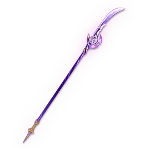
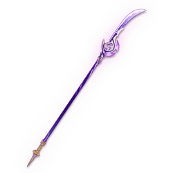

Contact Us
Terms Of Use
Privacy Police
Shenhe adalah putri dari pasangan pengusir setan yang tidak disebutkan namanya. Dulunya, Shenhe dibawa dan dibesarkan oleh Cloud Retainer sebagai murid setelah insiden traumatis oleh ayah Shenhe selama masa kecilnya
SHENHE BEST WEAPONS
 


SHENHE BEST ARTIFACTS

 \
\
SHENHE UPGRAD MATERIALS


Yae Miko merupakan kepala gadis di kuil Grand Narukami Shrine di Inazuma, serta pemilik dan Pemimpin Redaksi di Yae Publishing House.
YAE MIKO BEST WEAPONS


YAE MIKO BEST ARTIFACTS

YAE MIKO UPGRADE MATERIALS